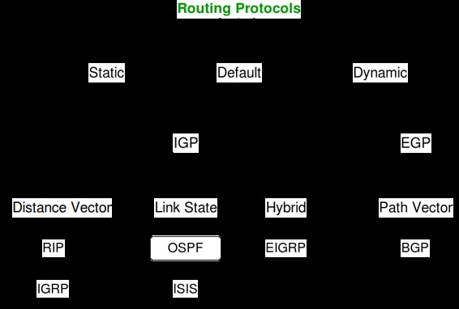

The Network Layer of the OSI Model is responsible for providing logical addressing, which routers use to select best path for routing packets. There are two types of packets used at this layer :
- Data Packets –
The user data is transferred in the inter-network by these data packets. Routed protocols are those protocols which support such data traffic. Examples of routed protocols are IPv4, IPv6 and AppleTalk. - Route Update Packets –
The information about the networks connected to all the routers is updated to the neighbouring routers through route update packets. Routing protocols are the ones that are responsible for sending them. Examples of routing protocols are RIP(Routing Information Protocol), EIGRP(Enhanced Interior Gateway Routing Protocol) and OSPF(Open Shortest Path First).
Now let’s take an real-life analogy to better understand the difference between routed and routing protocols.
Suppose you want to go to your home after your semester examinations. You book a cab or take a bus to your home. In the path of your journey, you encounter several sign boards which help you take proper or best path, or in case of a cab, Google Maps will help you in choosing the best route.
In this analogy, consider yourself as the DATA, the bus or cab as the ROUTED PROTOCOL and the sign boards or the GPS installed in your driver’s phone as the ROUTING PROTOCOL.
Similarly, in a network routers use routing protocols to determine the best path for a packet to travel through the inter-network more efficiently. Routed protocols are assigned to an interface and determine the method of delivering the packet.
Now, lets move on to the different types of routing protocols.

Abbreviations –
IGP – Interior Gateway Protocol
EGP – Exterior Gateway Protocol
RIP – Routing Information Protocol
IGRP – Interior Gateway Routing Protocol
OSPF – Open Shortest Path First
ISIS – Intermediate System to Intermediate System
EIGRP – Enhanced Interior Gateway Routing Protocol
BGP – Border Gateway Protocol
References –
Todd Lammle e-book
Wikipedia